150
Page 54

Page 55
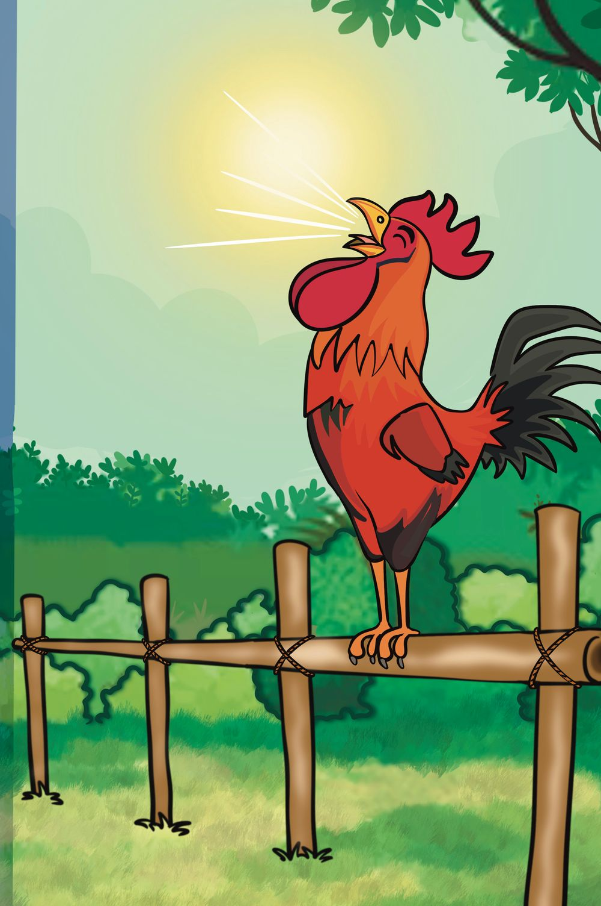

9
It is time...
151
Page 56
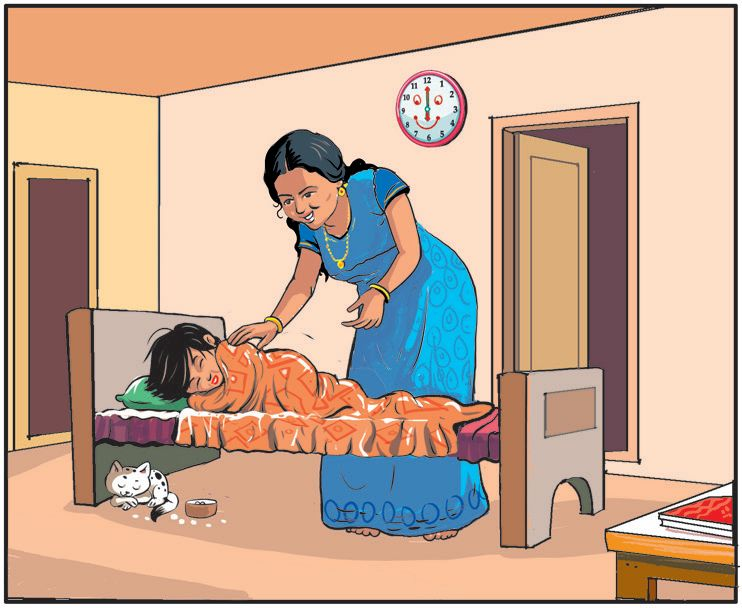
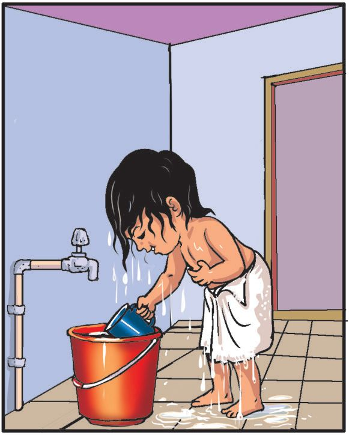

JANUARY
Mia’s diary. My day.
WEDNESDAY
Mom woke me up in the morning.
Brushed my teeth.
Bath took more time.
152
Page 57
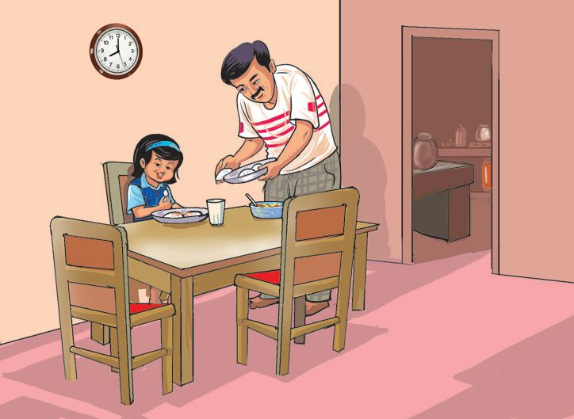
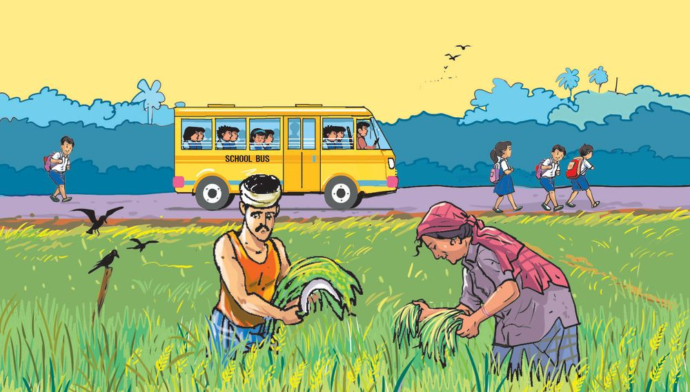
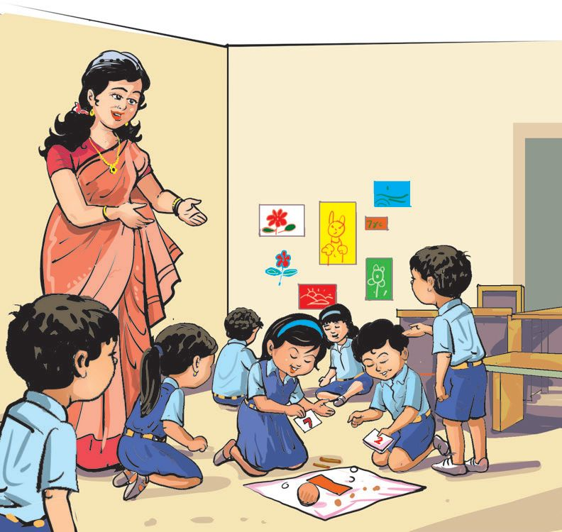

Dad gave me dosa and chutney.
Since I took the school van, I reached school quickly.
With Renuka teaher until noon.
153
Page 58
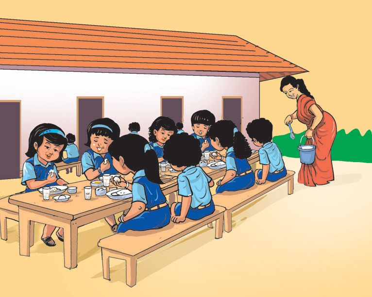
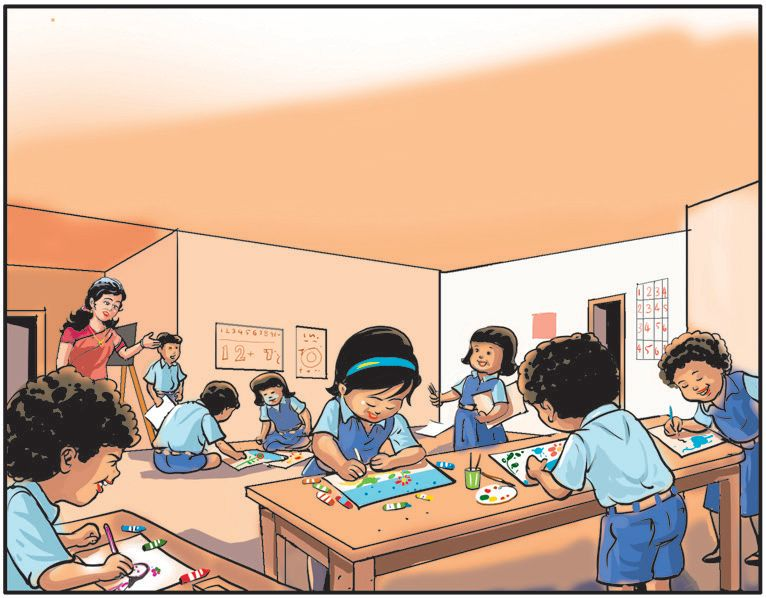
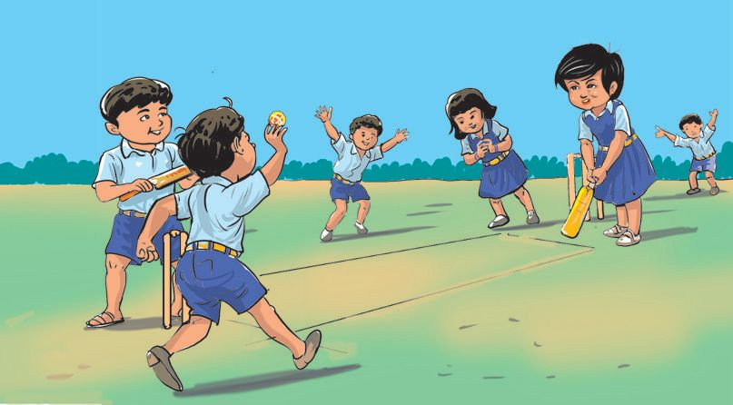

For lunch, I got my favourite curry. It was tasty.
During the afternoon, I drew pictures in the maths note book.
In the evening, I played cricket with my friends.
154
Page 59
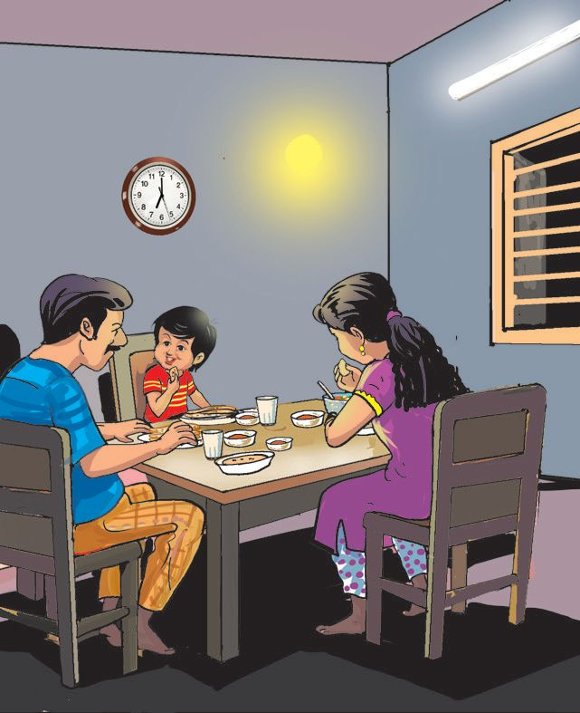
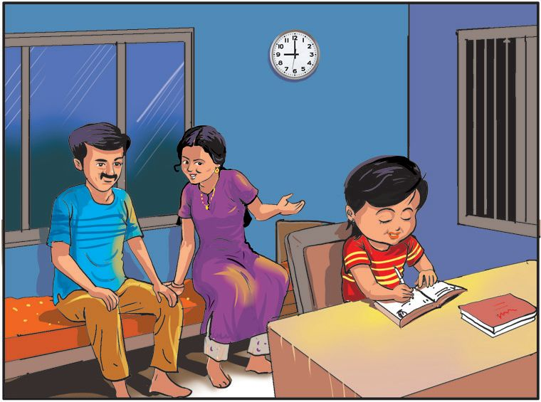

At night, We had chappathi.
Mom told, “Sweety, it’s 9 o’clock. Go to sleep”.
155
Page 60


Diary with pictures. What all things did Mia see? To what all places did she go? What all things did she do?
156
Page 61


My diary Where did you go last Sunday? What all things did you do? Write a day’s diary describing all these. Draw pictures too.
Today is Sunday. What should I write in my diary?
I must write the times too-like morning, noon, evening, night,
157
Page 62


Week Days Days of the week, all seven of them Went to see the Kodakara Pooram Sunday in front, with puffed up chest Meekly followed by all the rest Monday bought many make-up things Tuesday went for bangles and rings Wednesday and Thursday walked a lot Munching on the titbits they had bought Friday wanted something to wear Saturday went to buy some coolware As they walked merrily in the fairground Crackers burst with teriffic sound This gave the seven friends such a scare They climbed on a wall and stayed there
P.T. Manikandan Panthaloor (Translation)
158
Page 63

Calendar reading Say the names of the days of the week and write them down.
JANUARY
2025
SUN MON TUE WED THU FRI
1
2
17
5
21
12
6
22
13 28
19
20
26
1
7
24
25
10
26
20
11
SECOND SATURDAY
4
10
27
18
24
30 16
19
3
9
4
17
23
29 15
9
2
8
3
18
16
22
28 14
8 15
21
27 13
23
14 29
6
REPUBLIC DAY
7
MANNAM JAYANTHI
SAT
5
25 11
12
31 17
18
How many holidays in January, 2025? On which day and date does New Year start?
159
Page 64


Clean School. On Sunday there was a meeting in the school for parents. The Clean School programme was inaugurated on Monday. Ward Member was present. On Tuesday, palm-leaf baskets were made. Pits were dug on Wednesday. Poster campaign on Thursday. On Friday, all the parents cleaned up the school and surroundings. On Saturday Panchayat President declared our school a ‘Clean School’.
My experience (One Week) Write one nice thing that happened on each day of the week. Sunday Monday Tuesday Wednesday Thursday Friday Saturday
160
Page 65

Month of a year Look at the calendar and fill in the names of the months. Beginning of a new year
January
1 2
February
3
Summer Vacation
4 5
School Reopens 6 7
Independence Day
8 9 10
Children’s Day Christmas
11 12
December
On which months do you have the summer vacation?
In which month is your birthday? Colour the month blue. Which is the last month of a year?
161
Page 66


Which month?
New year begins
Republic Day
Children’s Day
Gandhi Jayanthi
Independence Day
Teachers’ Day
162
September
Page 67


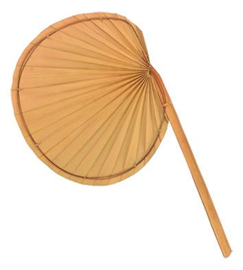
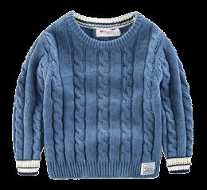

Seasons
Summer
Spring
Rainy
Winter
Join pictures suitable to the seasons. Spring
Winter
Rainy
Summer
163